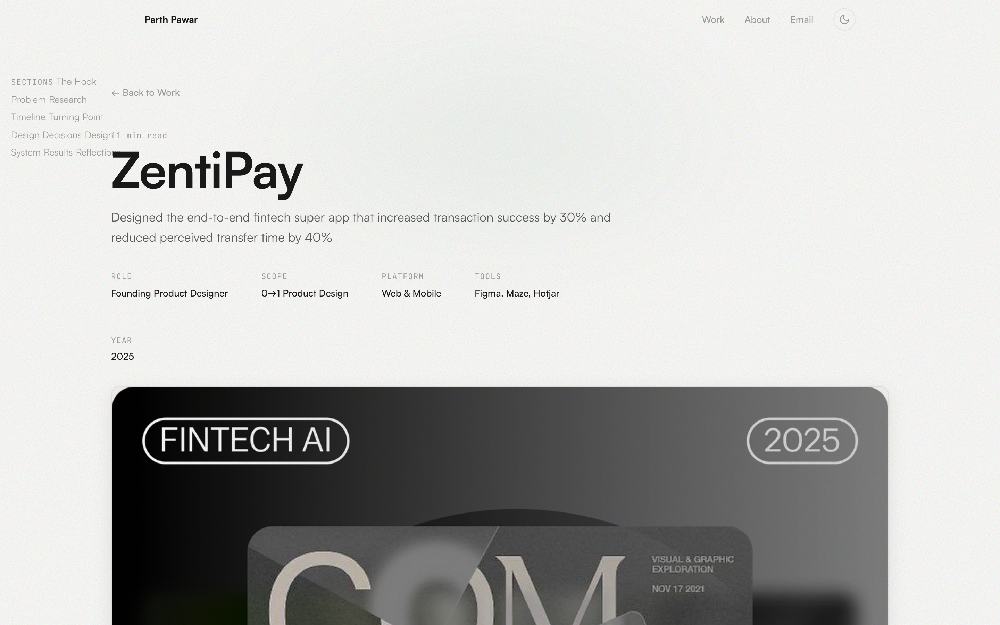

A construction worker in Dubai sends $400 home to his family in Kerala every month. By the time it arrives, $25 has disappeared — eaten by exchange rate markups, hidden fees, and intermediary charges he never agreed to. That’s $300 a year. Enough to cover his daughter’s school supplies for an entire term.
He knows he’s being overcharged. He just doesn’t have a better option.
That’s the problem ZentiPay was built to solve. And that’s why I joined as the founding designer — to build the product from a blank Figma file into something that could earn trust from people who had every reason not to give it.
Overview
ZentiPay is an AI-driven crypto payments platform built for migrant workers and international students — people who send money home regularly but lose hundreds annually to opaque fees, slow transfers, and interfaces that weren’t designed for them. As the founding product designer, I shaped the product from zero: research, information architecture, interaction design, design system, and usability validation across five countries.
The Mandate
Build a cross-border payment experience so clear and trustworthy that first-time crypto users complete transfers without hesitation. Every design decision had to earn trust in the first 30 seconds — because in fintech, a confused user is a lost user, and a lost user is a family that doesn’t get their money.
01 — Problem
$700B+ in remittances annually.
Migrants still pay an average of 6.3% in fees.
Cross-border money transfer is a high-anxiety, high-stakes interaction. For migrant workers sending $200–$500 home each month, every dollar lost to hidden fees is a dollar that doesn’t reach their family. Yet the existing landscape — from legacy services like Western Union to newer fintech players — still treats this user segment as an afterthought.
The unbanked and underbanked face a compounding problem: confusing interfaces built for tech-literate users, fee structures buried in fine print, and zero feedback about where their money is at any given moment. The result is a population that either overpays or avoids digital transfers entirely.
The core tension: Users need to trust a digital platform with their earnings — often their family’s primary income — but every existing touchpoint erodes that trust through ambiguity, jargon, and hidden costs.
- Confusing multi-step flows with no progress indicators
- Fee estimates that change between confirmation and settlement
- No real-time tracking — users wait days without status updates
- Interfaces that assume English fluency and smartphone literacy
- Crypto terminology alienating non-technical users
02 — Research
15+ interviews across 4 countries revealed one pattern: users abandon when they can’t predict costs.
I ran a mixed-methods research sprint over three weeks. The goal was not just to understand pain points but to map the emotional arc of a cross-border transfer — from the moment a user decides to send money to the moment their recipient confirms receipt.
Key insight: “Users abandoned transfers at the fee confirmation step 67% of the time because they couldn’t predict total costs upfront.” This single finding shaped the product’s core interaction model: predictive pricing before commitment.
Competitive audit methodology — 8 platforms across 12 UX dimensions
Each platform was evaluated against: onboarding friction (steps to first transfer), fee transparency (when and how costs appear), transfer tracking granularity, mobile responsiveness, language support, KYC flow design, error recovery, trust signals, estimated delivery accuracy, repeat-transfer friction, accessibility, and customer support access.
Key finding: no platform scored well on both fee transparency and transfer tracking. Most optimized for one at the expense of the other. ZentiPay was designed to excel at both simultaneously.
Research Themes
Project Arc
From blank file to five-country validation
Discovery & Research
15+ interviews across India, Philippines, Nigeria, Mexico. Competitive audit of 8 remittance platforms. Journey mapping identified 7 friction points.
Architecture & Wireframes
Information architecture, adaptive onboarding branching logic, fee estimator interaction model. Low-fidelity prototypes tested with 8 participants.
Design System & High-fidelity
120+ component library across web and mobile. Multi-language support, RTL layouts, accessibility audit. Trust architecture framework developed.
Usability Testing & Iteration
40+ participants across 5 countries. A/B tests on fee disclosure timing, onboarding track assignments, and trust signal placement. Three major iteration cycles.
Launch & Post-launch Analytics
Phased rollout with 8-week analytics tracking. Continuous optimization based on session recordings and conversion funnels.
After three weeks of research across four countries, I had a wall of sticky notes, twelve journey maps, and one uncomfortable truth: the problem wasn’t that existing apps were bad at moving money. They were bad at moving trust.
Every competitor optimized for speed — fewer screens, faster flows, minimal friction. But our users didn’t want fewer steps. They wanted fewer doubts. That reframe changed everything about how I designed ZentiPay.
I stopped asking “how do we make this faster?” and started asking “what is the user afraid of right now?” Every screen became an answer to a specific fear.
03 — Design Decisions
Three bets that defined the product
Every design decision at ZentiPay traced back to one question: does this reduce the user’s anxiety or increase their confidence? The product needed to feel simpler than a bank app while being more transparent than any competitor.
1. Adaptive Onboarding
The problem: A construction worker in Dubai and a graduate student in New York have fundamentally different relationships with technology. Forcing both through the same onboarding flow guaranteed at least one would drop off.
The solution: I designed an adaptive onboarding system that assessed tech literacy and country-specific requirements in the first three interactions. Based on signal cues — tap speed, scroll behavior, language selection — the flow adjusted its complexity, explanation density, and verification steps.
How it worked: New users saw a minimal country-and-purpose selector. The system then branched into three onboarding tracks: guided (step-by-step with visual cues), standard (clean forms with inline help), and express (minimal friction for power users). Users could switch tracks at any point.
2. Predictive Fee Estimator
The problem: Users abandoned transfers because fees appeared late in the flow — often higher than expected. The mental model was broken: “I thought I was sending $300, but only $278 arrives?”
The solution: I placed an AI-powered fee estimator on the very first screen of the transfer flow. Before users entered any personal details, they could see the exact amount their recipient would receive, the total fee breakdown (network fee, exchange rate margin, service fee), and a comparison against competitors.
The interaction: As users typed an amount, the estimator updated in real time — showing both the send amount and receive amount simultaneously. A confidence indicator displayed how likely the quoted rate was to hold for the next 15 minutes, eliminating the “bait and switch” anxiety.
3. Trust Architecture
The problem: Displaying all security credentials upfront overwhelms users. But hiding them makes users feel unsafe. Traditional fintech apps solve this by burying compliance badges in footers — where no one looks.
The solution: I designed a progressive trust disclosure system. Security signals appeared precisely when users needed reassurance, not before. During onboarding: regulatory compliance badges. At the payment step: encryption indicators and bank-grade security language. After transfer: real-time tracking with estimated delivery and receipt confirmation.
The framework: Each screen was scored on an “anxiety index” (1–10). High-anxiety screens — entering bank details, confirming large amounts, waiting for delivery — received proportionally more trust signals. Low-anxiety screens stayed clean.
Design principle: Trust signals should appear at the moment of doubt, not the moment of marketing. Every security indicator in ZentiPay was placed based on where users actually hesitated — identified through session recordings and click heatmaps.
04 — Design System
Built for scale across languages, platforms, and literacy levels
ZentiPay needed to work identically in English, Hindi, Spanish, Tagalog, and Arabic — including RTL layouts. I built a component library from the ground up that treated internationalization as a first-class requirement, not a retrofit.
The system comprised 120+ components across web and mobile, with built-in states for loading, error, success, and empty. Every component met WCAG AA contrast requirements and supported dynamic text scaling for users with accessibility needs.
- Accessibility-first: WCAG AA compliance, screen reader support, RTL layout system
- Multi-language: Components designed for text expansion (German is 30% longer than English) and contraction
- Motion system: Purposeful animations for transaction feedback — confirmations, progress states, and error recovery. No decorative motion.
- Platform parity: Shared design tokens between web and mobile ensured visual consistency without identical layouts
- Intelligent defaults: AI-driven pre-fill for repeat transfers, currency pairs, and recipient details based on user history
05 — Results
The numbers that mattered
Impact was measured across usability testing with 40+ participants in 5 countries, A/B tests on key flows, and post-launch analytics over the first 8 weeks.
06 — Reflections
What I’d carry forward
ZentiPay was the project that fundamentally changed how I think about designing financial products. Three lessons will shape everything I build next.
The biggest misconception in fintech design is that users want fewer steps. They don’t. They want fewer doubts. Every screen in ZentiPay was designed to eliminate one specific doubt — and that reframe made all the difference.
“This is the first time I knew exactly how much my kids would get before I pressed send.”
— Usability test participant, Manila — a domestic worker who sends money to her children every two weeks
That sentence validated every late-night design review, every argument about whether to show fees upfront or bury them. It confirmed that what we built wasn’t just a better payment app. It was a small act of respect for people who deserved to know where their money was going.
Credits